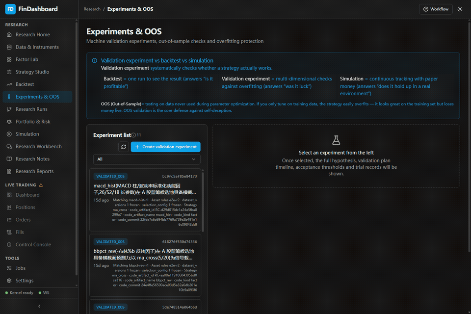
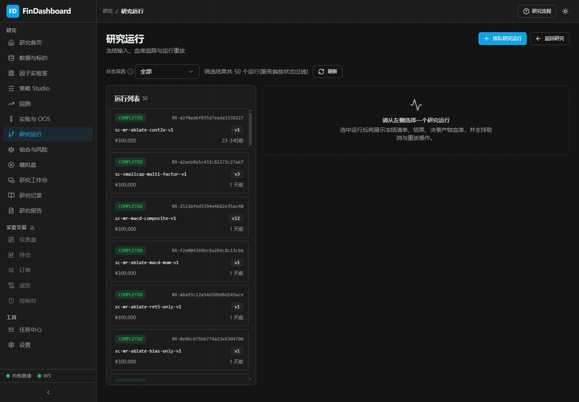

可自主执行
冻结数据、因子、回测、OOS、ResearchRun 和报告。
research_* / factor_* / BJ-*
Demo 0.1.0dev 真实研究数据 · Mock Broker · Worker 关闭
FinDashboard 把 agent 的量化研究放进一个受控系统：输入在决策时点冻结， 计算与代码在沙箱中运行，样本外门控决定“晋级”还是“登记为负结果”， 实盘交易内核始终由人类掌控。
典型应用场景
A 股截面动量是否存在稳定、成本后的样本外超额？如果证据不足，停止晋级， 保存失败证据，并阻止后续 agent 无条件重复试验。
这不是“生成一个策略然后看收益曲线”的演示。系统要回答三个更重要的问题： 当时能知道什么、运行到底用了什么、结论为什么可以或不可以被相信。
操作闭环
操作：选择冻结数据发布
在「数据与标的」中查看发布时间、覆盖率、质量门和发布 ID。研究运行只引用已发布版本，
不读取持续变化的上游表；财务观测继续受 available_at ≤ decision_at 约束。

操作：定义因子与方向
在「因子实验室」查看经济含义、计算口径、数据来源与预期方向；用户因子只有在沙箱执行、 质量门与晋级门全部通过后，才能成为正式策略规格的输入。

操作：预注册并运行样本外验证
「实验与 OOS」冻结训练、验证和最终测试窗口，以及阈值与试验预算。
流程完成只说明实验执行完毕；结论必须读取 oos_outcome，不能把状态标签当作支持证据。

操作：检查 ResearchRun 血缘
每次运行绑定策略版本、数据发布、费用、组合约束与输出 checksum。 列表保留 completed、rejected、failed、interrupted 等状态，让失败与中断同样可查，而不是只展示“最好的一次”。

操作：执行验证门
“没有通过”不是 Demo 失败，而是阻止一个不稳健假设继续接近资金。 当前结论注册表已经把 A 股截面价格动量登记为多轮独立证伪；新会话若要重开，必须提出新证据并引用旧结论。
操作：晋级到组合与隔离模拟
组合层执行风险贡献、离散交易与资金可行性；模拟盘只接受已发布策略和 completed ResearchRun 的结构化目标仓位。 本次录制库尚无模拟账户，因此页面如实展示空状态，不伪造权益曲线。


安全边界
冻结数据、因子、回测、OOS、ResearchRun 和报告。
research_* / factor_* / BJ-*
只消费结构化目标，不连接 Broker，也不会自动晋级。
simulation_* / SIM-*
下单、改持仓、Kill Switch 和凭证能力永不注册为 agent 工具。
orders / fills / positions

展示内容规划
| 段落 | 操作 | 画面与证据 | 载体 | 当前状态 |
|---|---|---|---|---|
| 总览 | 沿左侧研究导航走完整链路 | 真实数据页面、运行状态、空状态与任务审计 | 17 秒 MP4 | 已录制 |
| 输入 | 打开冻结发布并核对版本 | release ID、PIT 口径、覆盖率、warning | 总览片段 + PNG | 已核验 |
| 验证 | 从实验列表选择已揭盲实验 | 假设、IS/validation/OOS 窗口、outcome | 5.5 秒 GIF | 已录制 |
| 血缘 | 从运行列表选择一次 ResearchRun | 策略版本、冻结 manifest、checksum、产物 | 5.5 秒 GIF | 已录制 |
| 晋级 | 通过门控后计算组合并创建模拟会话 | 风险贡献、离散订单、simulation_* 账本 | 后续 20–30 秒视频 | 等待合格模拟数据 |
| Agent | OpenCode 接收研究任务并调用受控工具 | MCP 审计、job ID、报告引用 | 后续 30–45 秒视频 | 运行时本次未启用 |
后两段不会用摆拍或手工写入数据库补齐；只有真实通过验证门并产生模拟账本后才录制。 当前版本先发布可核验的研究主链，后续媒体可独立替换，不改变页面结构。
0.1.0dev 发布口径